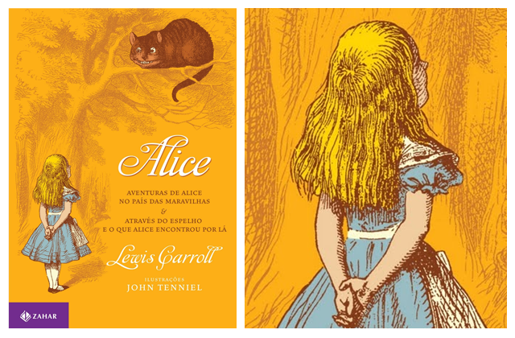

Estante de Livros
Sua Biblioteca a um clik de distancia
Harry Portter e a Pedra Filosofal

Sinopse
Harry Potter nunca tinha ouvido falar em Hogwarts até o momento em que as CARTAS começam a aparecer no capacho do número 4 da rua dos Alfeneiros. Endereçadas com um LACRE PÚRPURA, elas são repidamente confiscadas por seus tios TERRÍVEIS. E então, no décimo primeiro aniversário de Harry, um homem GIGANTESCO com olhos luzindo como besouros negros chamado RÚBEO HAGRID entra intempestivamente com uma notícia ASSOMBROSA:Harry Potter é um bruxo e tem uma vaga na ESCOLA DE MAGIA E BRUXARIA DE HOGWARTS. Uma aventura inacreditável está para começar!
Fonte: Google Books
| Data da Primeira Publicação |
Autor |
Idioma Original |
Generos |
| 26 de junho de 1997 |
J.K. Rowling |
Inglês |
Romance, Literatura Infantil, Alta fantasia |
O Senhor dos Anéis: A Sociedade do Anel

Sinopse
A Sociedade do Anel O volume inicial de O Senhor dos Anéis, lançado originalmente em julho de 1954, foi o primeiro grande épico de fantasia moderno, conquistando milhões de leitores e se tornando o padrão de referência para todas as outras obras do gênero até hoje. A imaginação prodigiosa de J.R.R. Tolkien e seu conhecimento profundo das antigas mitologias da Europa permitiram que ele criasse um universo tão complexo e convincente quanto o mundo real
| Data da Primeira Publicação |
Autor |
Idioma Original |
Generos |
| 28 de Julho de 1954 |
J.R.R TOLKIEN |
Inglês |
Literatura Fantastica |
Percy Jackson: O Ladrão de raios

Sinopse
Primeiro volume da saga Percy Jackson e os olimpianos, O ladrão de raios esteve entre os primeiros lugares na lista das séries mais vendidas do The New York Times. O autor conjuga lendas da mitologia grega com aventuras no século XXI. Nelas, os deuses do Olimpo continuam vivos, ainda se apaixonam por mortais e geram filhos metade deuses, metade humanos, como os heróis da Grécia antiga.
| Data da Primeira Publicação |
Autor |
Idioma Original |
Generos |
| 28 de Julho de 2005 |
Rick Riordan |
Inglês |
Mitologia Grega, Romance, Ficção |
Alice no País das Maravilhas

Sinopse
Você poderia me dizer, por favor, qual caminho eu devo seguir a partir daqui?'
Que esta pergunta seja feita por uma garotinha perdida de casa (após ter seguido um coelho falante até sua toca) a uma espécie de gato fantasmagórico flutuante já não causa nenhuma estranheza quando chegamos na tal parte da história, pois como nos alertou a própria menina: 'há tanta coisa estranha acontecendo aqui que eu já não me surpreendo com mais nada'
| Data da Primeira Publicação |
Autor |
Idioma Original |
Generos |
| Novembro de 1985 |
Lewis Carrol |
Inglês |
Literatura Infantil, fantastica |
O guia do mochileiro das galáxias

Sinopse
Considerado um dos maiores clássicos da literatura de ficção científica, O Guia do Mochileiro das Galáxias
| Data da Primeira Publicação |
Autor |
Idioma Original |
Generos |
| 12 de Outubro de 1979 |
Douglas Adams |
Inglês |
ficção cientifica |